Problem 1. A certain function F has the following truth table:
A B C | F ========|=== 0 0 0 | 1 0 0 1 | 0 0 1 0 | 0 0 1 1 | 1 1 0 0 | 1 1 0 1 | 1 1 1 0 | 0 1 1 1 | 1
-
 Write a sum-of-products expression for F.
Write a sum-of-products expression for F.
_ _ _ _ _ _ _ F = A*B*C + A*B*C + A*B*C + A*B*C + A*B*C-
Write a minimal sum-of-products expression for F.
Show a combinational circuit that implements F using only
INV and NAND gates.
First construct a Karnaugh map for F: 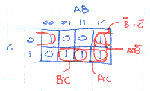 To cover all the 1's in the map we have to use 3 of the 4 patches:
_ _ _ F = B*C + A*B + B*COne possible schematic diagram is shown below. Note that the final 3-input NAND gate has been drawn in it's Demorganized form, i.e., an OR gate with inverting inputs. 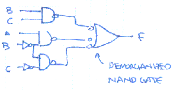-
Implement F using one 4-input MUX and inverter.
If we use A and B as the select inputs for the MUX then the four data inputs of the MUX should be tied to one of "0" (ground), "1" (Vdd), "C" or "not C". For this function the following is the correct schematic. Note that by changing the connections on the data inputs we could implement any function of A, B and C. 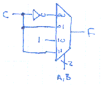
-
Write a minimal sum-of-products expression for NOT(F).
We can use the Karnaugh map above to answer this question too: just write equations for patches that cover the 0's:
_ _ _ F = B*C + A*B*C
Problem 2.-
Give a minimal sum-of-products expression that is equivalent
to the follow logic expressions:
_____ (A) A + B _ _ _ _ _ _ _ (B) A*B*C + A*B*C + A*B*C + A*B*C + A*B*C + A*B*C_ _ (A) A*B (B) B + C-
Multiple choice:
A Karnaugh map can't represent more than 2 variables along a single
dimension because
- Gray code counts can't go beyond 2 bits.
- Each value v along a dimension must be adjacent to all values that are Hamming distance 1 from v.
- Three is not a power of two.
- No reason. You can represent 3 variables along a dimension. You couldn't make 5-variable K-maps otherwise.
2. The 2-bit gray code cycle 00-01-11-10-... handles two variables just fine, but can't be extended to 3 bits. There are 3-bit gray codes but they involve non-adjacent encodings that are Hamming distance 1 apart.-
What is the maximum number of product terms in a minimal
sum-of-products expressions with three variables?
The most complicated K-map that doesn't permit any sort of simplification is a checkerboard of 1's where 50% of the K-map cells can be 1. So in a 3-input K-map, there are eight cells of which four can be 1 in a checkerboard pattern. Each 1 in the checkboard corresponds to a separate product term since it can't be combined with it's neighbors and herefore the maximal number of product terms is 4.
-
True or false: A boolean function of N variables with greater than
2N-1 product terms can always be simplified to an
expression using fewer product terms.
True. If there are more than 2N-1 product terms, the K-map of the function would be more than half full and there would be 1's in at least two adjacent cells, leading to a possible simplification.
-
Suppose the stock room is very low on components and
has only five NAND gates on hand. Would we be able to
build an implementation of any arbitary 2-input boolean
function?
Yes. 3 of the NAND gates could be arranged in a tree, computing the sum-of-products of 2 product terms. (We know from the previous problem that any function with 2 inputs can be simplified down to just 2 product terms.) The other two NAND gates could be used as inverters to produce negations of the inputs which may be needed for the product terms.
Problem 3. In the Karnaugh maps below the use of "X" in a cell indicates a "don't care" situation where the value of the function for those inputs can be chosen to minimize the size of the overall expression. 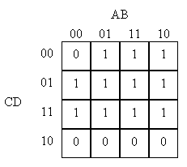 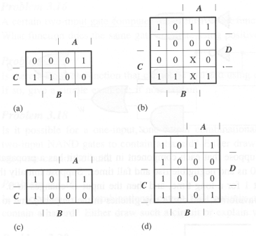-
Circle the prime implicants in the Karnaugh maps and write a minimal
sum-of-products expression for each of the maps.
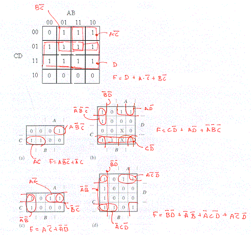
Problem 4. The following diagram shows the pulldown circuitry for a static CMOS logic gate that implements the function F(A,B,C,D): 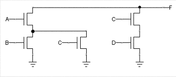-
Draw a circuit diagram for the pullup circuitry that would complete
the static CMOS implementation of F(A,B,C,D).
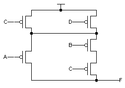
-
Assuming the correct pullup circuitry is added to the diagram above,
give a minimal sum-of-products expression for F(A,B,C,D).
_ _ _ _ _ _ _ _ _ _ _ _ _ _ _ _ _ _ _ _ F = (C + D)*(A + B*C) = A*C + A*D + B*C + B*C*D = A*C + A*D + B*C-
Which of the following changes will decrease the propagation time of
the above circuit?
-
(A) decreasing the power supply voltage
(B) increasing the power supply voltage
(C) increasing the operating temperature
(D) redefining VOL to provide increased noise margins(B). From Lab #1 we know that gates run faster (ie, have decreased propagation times) when the power supply is increased or the operating temperature is lowered. Redefining VOL to provide increased noise margins would require giving a lower value, making the output have to make a longer transition before it reached VOL.
Problem 5. The following PLA implements H(A,B,C): 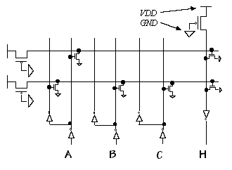-
Write a minimal sum-of-products expression for H.
The two horizontal signals in the PLA are product terms:
_ top term is pulled down when A = 1 => product term is A _ _ _ bottom term is pulled down when A or B or C is 1 => product term is A*B*CThe rightmost column is just a distributed 2-input NOR gate that combines the product terms, and the final inverter converts this into a OR of the product terms. So:_ H = A + A*B*C = A + B*C
Problem 6. The following diagram shows a ROM implementation of a 3-input Boolean function: Give the Boolean function represented at the output, Z. 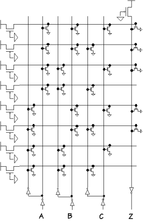-
For a particular set of input values, how many of the
horizontal term lines carry a logical one?
Each horizontal term decodes one of the eight possible product terms formed from A, B and C. For example:
_ _ _ top term is pulled down when A or B or C = 1 => product term is A*B*C _ _ _ next term is pulled down when A or B or C is 1 => product term is A*B*C ...So, for a particular set of input values only one of these products will be true.-
Give the Boolean function represented at the output, Z.
The rightmost column is a distributed NOR gate that combines product terms which are connected to one of the pulldowns of that NOR gate. The final inverter converts the NOR into an OR. So working from the top down the five product terms are:
_ _ _ _ _ Z = A*B*C + A*B*C + A*B*C + A*B*C + A*B*C-
Is there an example involving two valid inputs that demonstrates that
the above device is not lenient?
Yes. When A = B = 1 and C changes, both the topmost horizontal signal and the next-to-topmost horizontal signal will change value. Depending on the relative timing of these changes there may be a moment when both signals are 0 and the rightmost column momentarily ceases to be pulled down, causing the output of the final inverter to momentarily go to zero. This output glitch means the device is not lenient.
-
Suppose you undertake to reduce the preceding ROM implementation by
eliminating any components (pulldowns, wires, and inverters) that are
unused or redundant. Components are eliminated -- replaced by open
circuits -- until no further components can be removed without
changing the function computed by the circuit. How many word lines
(horizontal lines that consitute outputs of the original decoder
section of the ROM) are left after this reduction has been performed?
The function computed by this ROM reduces to B+AC. Eliminating selected pulldowns from the top two horizontal (word) lines yields two word lines corresponding to each term of this result; all the others are redundant and can be eliminated. We're left with two word lines, each of which pulls down the bit line that drives the output inverter.
-
Which of the following is the most accurate comparison of the reduced
ROM circuit with a direct, full-complementary CMOS implementation of
the same function?
- The reduced ROM implementation uses fewer transistors.
- The reduced ROM implementation is faster.
- The reduced ROM implementation has a faster output rise time.
- The reduced ROM implementation is essentially identical to the direct CMOS implementation.
3. Since the ROM output is driven by an inverter (which has a single pullup PFET) it will transition faster than the output of a complex gate (which has multiple PFETs connected in series in the pullup circuitry). In terms of size and speed, the ROM is generally slower and larger than the equivalent gate.
Problem 7.-
Add the necessary pulldown NFETs to the F and G circuitry in the ROM
circuit diagram below to implement the indicated logic functions for
F and G.
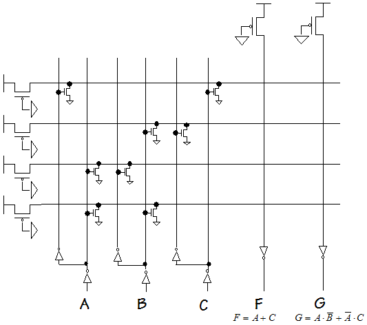
First we need to figure out the equations for each of the product terms. From top to bottom the terms are:
_ _ _ term 1: A*C term 2: B*C term 3: A*B term 4: A*B
G is simply the OR of terms 1 and 3. With a little thought we can rewrite F as:_ _ _ _ _ F = A + C = A + A*C = A(B + B) + A*C = A*B + A*B + A*C
which is the OR of terms 1, 3 and 4. We can now fill in the necessary pulldowns: 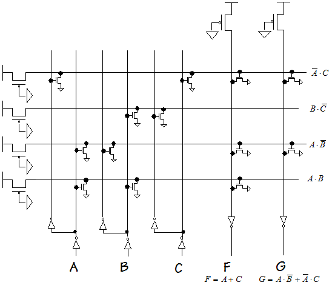
Problem 8. A certain 3-input function G(A,B,C) has the following implementation: 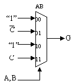-
Give a minimal sum-of-products expression for G.
_ _ _ G = A*C + A*C + B-
Design a ROM implementation for G.
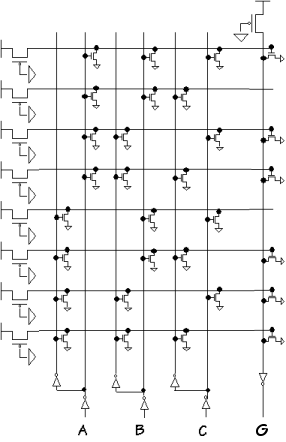
Problem 9. Digital Widgets Co. has introduced a new logic IC consisting of two comparator cells in a 14-pin package. A comparator cell, as drawn below, has four inputs and two outputs. 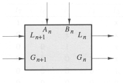 The inputs are labeled An, Bn, Gn+1, and Ln+1, and the outputs are labeled Gn and Ln. The G and L signals have the meanings "A greater than B" and "A less than B," respectively. If both G and L are false, the meaning is A = B. G and L are never both true. Two k-bit numbers A and B may be compared using a circuit such as the following: 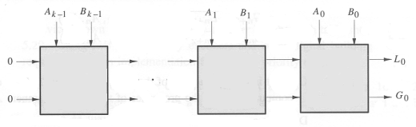 The most significant bits are supplied as Ak-1 and Bk-1, and the least significant bits are A0 and B0. The output of a comparison is taken from the G and L outputs of the lowest-order cell (G0 and L0). Gn+1 and Ln+1 of the highest-order cell are connected to logical 0 to indicate that the numbers are assumed to be equal until some difference is found between a pair of bits Ai and Bi. If the Gn+1 and Ln+1 inputs indicate that higher-order bits have established A > B or A < B, then cell n must propagate that result to Gn and Ln. However, if Gn+1 and Ln+1 indicate that the higher-order bits are equal, then cell n must compare its bit of A and B to determine if A > B, A < B, or A = B and must signal that result appropriately at Gn and Ln.-
Draw a logic diagram for an implementation of the Digital Widgets
comparator cell.
The equations for Gn and Ln are
____ __ Gn = Gn+1 + Ln+1*An*Bn ____ __ Ln = Ln+1 + Gn+1*An*BnIf we construct a schematic using INV, AND and OR, the resulting circuit would have a Tpd of 3 gate delays.-
Since there is delay associated with the propagation of the G and L
signals through each cell, we could make the comparator work faster
by redesigning the basic cell to compare two bits at a time, halving the number
of stages through which the G and L signals will need to propagate.
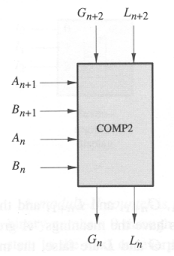
Work out expressions for Gn and Ln as functions of Gn+2, Ln+2,
An+1, Bn+1, An, and Bn. Express your answers in the form
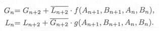
____ ____ ____ ____ __ Gn = Gn+2 + Ln+2*(An+1*Bn+1 + (An+1*Bn+1 + An+1*Bn+1)*An*Bn) ____ ____ ____ ____ __ Ln = Ln+2 + Gn+2*(An+1*Bn+1 + (An+1*Bn+1 + An+1*Bn+1)*An*Bn)-
Given a reasonable implementation of the equations for Gn and Ln
derived in part B, how does the delay from a change in Gn+2
and Ln+2 to the appearance of correct outputs at Gn
and Ln compare with the corresponding delay for a circuit composed
of a cascade of two of the cells developed in part A?
Assume that all A and B inputs remain unchanged throughout.
Note: The reason for our interest in the propagation delay of the G and
L signals, specifically, is that in a chain of N comparators, every
extra gate delay in the G--L path will penalize total performance by N
gate delays. The time it takes for a change in an A or B input to be reflected
in the corresponding G or L output is also important, but improvements here
can at best result in decreasing total delay by some constant amount.
If we expand out either equation for the two-bit-at-a-time cell, we end up with 4 product terms, two of which involve 5 inputs. If we have 5-input gates in our library, we can implement the two-bit cell with the same Tpd as the one-bit cell. So Gn and Ln are produced by a two-bit cell with half the delay as from a cascade of two one-bit cells. If we restrict ourselves to 4-input gates, this adds one gate delay to Tpd for the two-bit cell (Tpd = 4), still an improvement over two one-bit cells (Tpd = 6).
-
Given a reasonable implementation of the equations for Gn and Ln
derived in part B, how does the delay from a change in Gn+2
and Ln+2 to the appearance of correct outputs at Gn
and Ln compare with the corresponding delay for a circuit composed
of a cascade of two of the cells developed in part A?
Assume that all A and B inputs remain unchanged throughout.
Note: The reason for our interest in the propagation delay of the G and
L signals, specifically, is that in a chain of N comparators, every
extra gate delay in the G--L path will penalize total performance by N
gate delays. The time it takes for a change in an A or B input to be reflected
in the corresponding G or L output is also important, but improvements here
can at best result in decreasing total delay by some constant amount.
-
Since there is delay associated with the propagation of the G and L
signals through each cell, we could make the comparator work faster
by redesigning the basic cell to compare two bits at a time, halving the number
of stages through which the G and L signals will need to propagate.
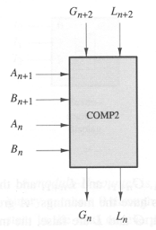
Work out expressions for Gn and Ln as functions of Gn+2, Ln+2,
An+1, Bn+1, An, and Bn. Express your answers in the form
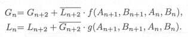
-
Draw a logic diagram for an implementation of the Digital Widgets
comparator cell.
-
Design a ROM implementation for G.
-
Give a minimal sum-of-products expression for G.
-
Which of the following is the most accurate comparison of the reduced
ROM circuit with a direct, full-complementary CMOS implementation of
the same function?
-
Suppose you undertake to reduce the preceding ROM implementation by
eliminating any components (pulldowns, wires, and inverters) that are
unused or redundant. Components are eliminated -- replaced by open
circuits -- until no further components can be removed without
changing the function computed by the circuit. How many word lines
(horizontal lines that consitute outputs of the original decoder
section of the ROM) are left after this reduction has been performed?
-
-
-
For a particular set of input values, how many of the
horizontal term lines carry a logical one?
-
-
Which of the following changes will decrease the propagation time of
the above circuit?
-
Assuming the correct pullup circuitry is added to the diagram above,
give a minimal sum-of-products expression for F(A,B,C,D).
-
Draw a circuit diagram for the pullup circuitry that would complete
the static CMOS implementation of F(A,B,C,D).
-
Circle the prime implicants in the Karnaugh maps and write a minimal
sum-of-products expression for each of the maps.
-
-
-
Multiple choice:
A Karnaugh map can't represent more than 2 variables along a single
dimension because
-
Give a minimal sum-of-products expression that is equivalent
to the follow logic expressions:
-
-
-